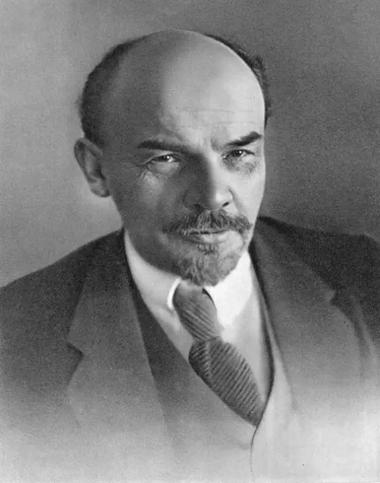

Великие деятели России
Петр I (1672-1725)
Петр 1 поистине был великим. У Петра все было великое – рост, войско, сражения, территории, замыслы. Он стремился не только расширить границы Российского государства, но и сделать в нем жизнь подобно той, что видел в Европе. Он многому учился сам и учил других. Однако в своем стремлении быстрее внедрить новые порядки доходил нередко до крайности, кровавые расправы в его время были не редкостью. Он во всем торопился, словно чувствовал, что судьба отпустила ему не очень большой срок жизни.
«Чего я хочу, то должностатьбыть»Петр I
Александр Сергеевич Пушкин (1799-1837) — Солнце русской поэзии
Время неумолимо удаляет нас от Пушкина, поэта, драматурга, прозаика, но его творческий гений от этого проявляется все отчетливее. Его стихи, поэмы и повести показывали разные стороны российской действительности, светской жизни и крестьянского быта, в них отражалась мятущаяся душа поэта, глубокие чувства и переживания. Его поэзия и проза были с восторгом восприняты читателями XIX века. Именно тогда и был создан ореол его величия, его стали считать родоначальником русской литературы, создателем современного литературного языка. Неслучайно время, в которое он жил, называется «пушкинской эпохой».
Мы все ленивы и нелюбопытны Александр Сергеевич Пушкин
Владимир Ильич Ульянов (Ленин) (1870-1924) — Практик построения коммунизма
Владимир Ильич Ленин – самый известный политический деятель XX века. На протяжении свыше 70 лет в Советском Союзе он считался непревзойденным гением, поставившим цель построить в России коммунизм. В 1917 году Ленин взял на себя непосильную задачу – сделать отсталую аграрную Россию социалистической, а затем коммунистической. Он мечтал, что трудящиеся будут получать все по своим потребностям. Идея оказалась несостоятельной. Правда, после Ленина страна постепенно перешла на индустриальный путь развития. Коммунизма не достигли, но ценой огромных усилий, в том числе миллионных человеческих жертв, СССР приблизился к передовым позициям на мировой арене.
Абстрактной истины нет, истина всегда конкретна Владимир Ильич Ленин
Иосиф Виссарионович Джугашвили (Сталин) (1878 -1953) — Вдохновитель всех побед
Генеральный секретарь ЦК Всесоюзной коммунистической партии (большевиков), глава Советского правительства Иосиф Сталин вывел страну на индустриальный путь развития, с его именем советский народ победил в Великой Отечественной войне, он вызвал массовый трудовой героизм, при нем страна стала сверхдержавой. Но он же насадил в стране тоталитарный, диктаторский режим, проводил насильственную коллективизацию, при нем в стране разразился голод, проводились массовые репрессии, мировое сообщество разделилось на два лагеря – социалистический и капиталистический. В истории Сталин так и остался двоякой личностью: победителем в войне и тираном собственного народа.
Жить стало лучше, жить стало веселее! Иосиф Сталин
Сергей Павлович Королёв (1906-1966) — Главный конструктор
Сергей Павлович Королёв был выдающимся инженером-конструктором, мечтавшим покорить космос. Он внес огромный вклад в организацию производства ракетно-космической техники и ракетного оружия в Советском Союзе. Он первым в мире запустил на земную орбиту спутники, научные станции, космические корабли. Сообщения об этом потрясли весь мир. Он мечтал осваивать просторы Вселенной с помощью автоматических аппаратов и начал готовить полет на Марс, но осуществить задуманное не успел.
Кто хочет работать — ищет средства, кто не хочет — причины. Серегей Павлович Королёв